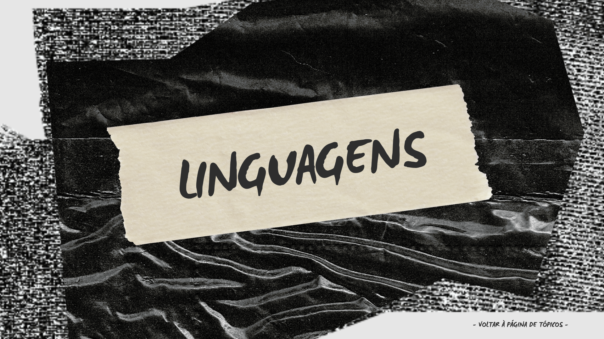

Modernismo: Sala de aula invertida.
Resenha Crítica sobre os textos "Felicidade Clandestina" de Clarice
Lispector e "Felicidade: modos de usar" de Leandro Karnal
Revista Literária: Obras da UFSC 2024